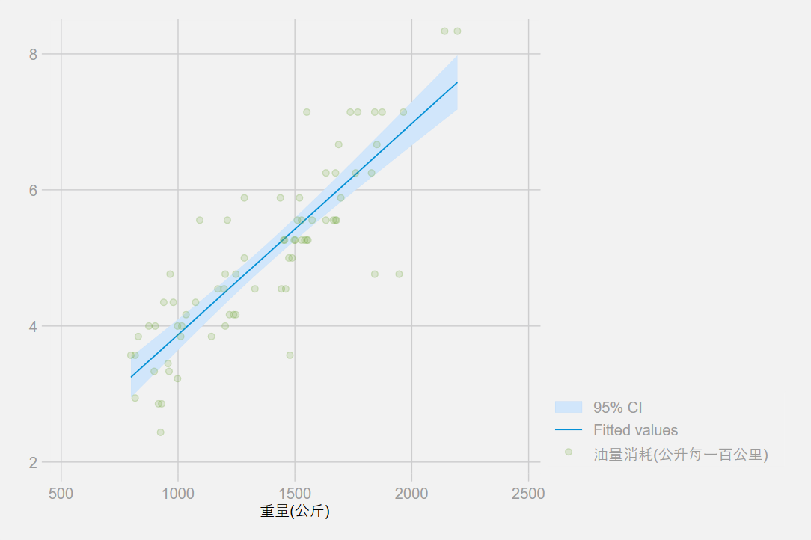

We conduct a study of the fuel consumption of cars in Stata’s auto dataset.
. sysuse auto, clear
(1978 Automobile Data)
We generate a variable, fuel, that measures the fuel consumption rate in the unit of Gallons per 100 Miles.
. generate fuel = 100/mpg
. label variable fuel "Fuel consumption (Gallons per 100 Miles)"
We examine variables for possible errors in the data.
. describe fuel weight
storage display value
variable name type format label variable label
--------------------------------------------------------------------------------
fuel float %9.0g Fuel consumption (Gallons per 100
Miles)
weight int %8.0gc Weight (lbs.)
. summarize weight
Variable | Obs Mean Std. Dev. Min Max
-------------+---------------------------------------------------------
weight | 74 3019.459 777.1936 1760 4840
The variable weight has minimum value 1760.00, maximum value 4840.00, and range 3080.00.
. scatter fuel weight, mcolor(blue%50)

. regress fuel weight
Source | SS df MS Number of obs = 74
-------------+---------------------------------- F(1, 72) = 194.71
Model | 87.2964969 1 87.2964969 Prob > F = 0.0000
Residual | 32.2797639 72 .448330054 R-squared = 0.7300
-------------+---------------------------------- Adj R-squared = 0.7263
Total | 119.576261 73 1.63803097 Root MSE = .66957
------------------------------------------------------------------------------
fuel | Coef. Std. Err. t P>|t| [95% Conf. Interval]
-------------+----------------------------------------------------------------
weight | .001407 .0001008 13.95 0.000 .001206 .0016081
_cons | .7707669 .3142571 2.45 0.017 .1443069 1.397227
------------------------------------------------------------------------------
The regression shows that for every unit increase in weight, a 0.0014 unit increase in fuel consumption is predicted.
. _coef_table, markdown
| fuel | Coef. | Std. Err. | t | P>|t| | [95% Conf. Interval] | |
|---|---|---|---|---|---|---|
| weight | .001407 | .0001008 | 13.95 | 0.000 | .001206 | .0016081 |
| _cons | .7707669 | .3142571 | 2.45 | 0.017 | .1443069 | 1.397227 |
. quietly regress fuel weight gear turn
. estimates store model1
. quietly regress fuel weight gear turn foreign
. estimates store model2
. estimates table model1 model2, b(%7.4f) stats(N r2_a) star
----------------------------------------
Variable | model1 model2
-------------+--------------------------
weight | 0.0014*** 0.0013***
gear_ratio | 0.1706 -0.3367
turn | 0.0243 0.0613
foreign | 0.8650***
_cons | -0.5814 -0.4661
-------------+--------------------------
N | 74 74
r2_a | 0.7218 0.7637
----------------------------------------
legend: * p<0.05; ** p<0.01; *** p<0.001
. estimates table model1 model2, varlabel b(%7.4f) stats(N r2_a) star markdown
| Variable | model1 | model2 |
|---|---|---|
| Weight (lbs.) | 0.0014*** | 0.0013*** |
| Gear Ratio | 0.1706 | -0.3367 |
| Turn Circle (ft.) | 0.0243 | 0.0613 |
| Car type | 0.8650*** | |
| Constant | -0.5814 | -0.4661 |
| N | 74 | 74 |
| r2_a | 0.7218 | 0.7637 |
legend: * p<0.05; ** p<0.01; *** p<0.001
. eststo : quietly regress fuel weight gear turn
(est1 stored)
. eststo : quietly regress fuel weight gear turn foreign
(est2 stored)
. esttab using esttab_ex.html, label ///
> width(80%) nogaps ///
> mtitles("Model 1" "Model 2") ///
> title(Regression table using -esttab-)
(output written to esttab_ex.html)
| (1) | (2) | |
| Model 1 | Model 2 | |
| Weight (lbs.) | 0.00136*** | 0.00126*** |
| (6.09) | (6.06) | |
| Gear Ratio | 0.171 | -0.337 |
| (0.64) | (-1.19) | |
| Turn Circle (ft.) | 0.0243 | 0.0613 |
| (0.70) | (1.81) | |
| Car type | 0.865*** | |
| (3.66) | ||
| Constant | -0.581 | -0.466 |
| (-0.38) | (-0.33) | |
| Observations | 74 | 74 |
|
t statistics in parentheses
* p < 0.05, ** p < 0.01, *** p < 0.001 | ||
The community-contributed esttab is available on the Boston College Statistical Software Components (SSC) archive; see ssc install for details.